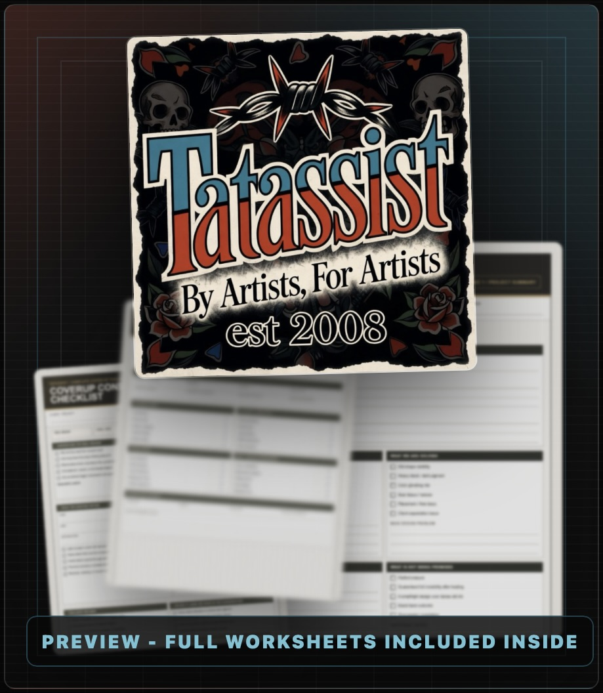
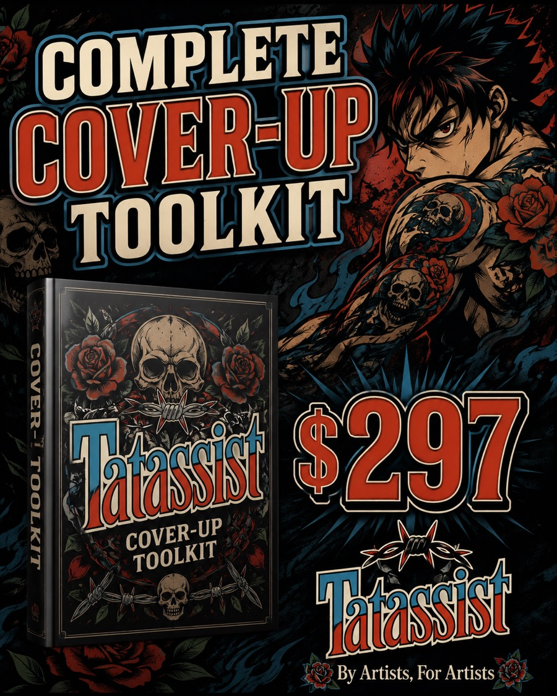
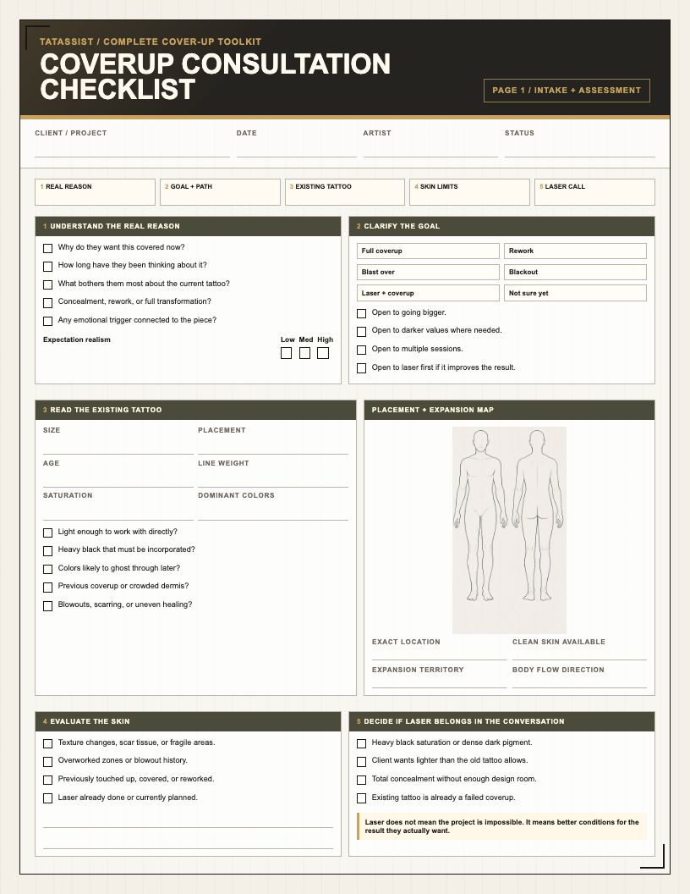
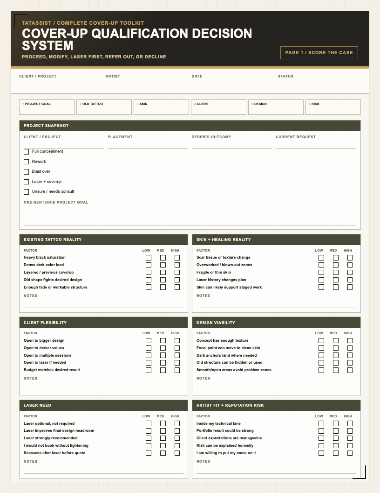
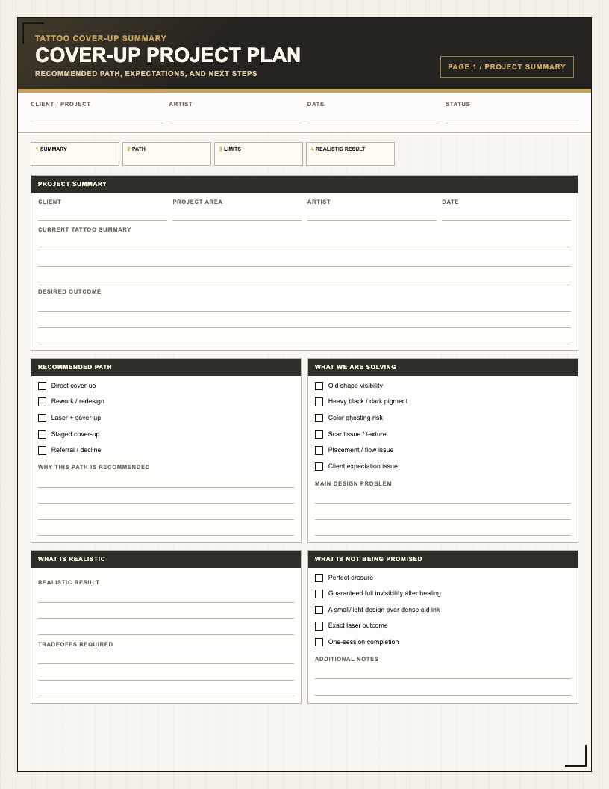
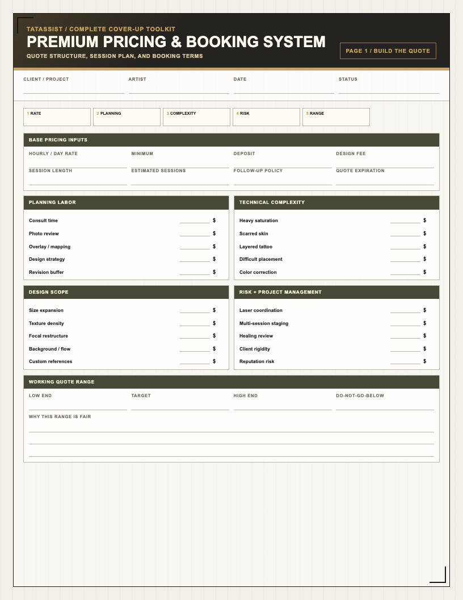
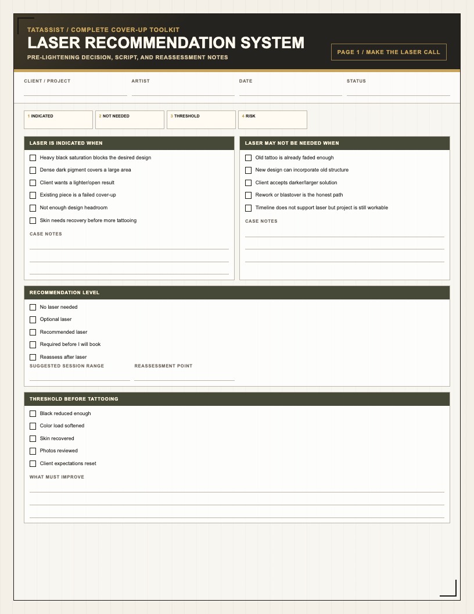
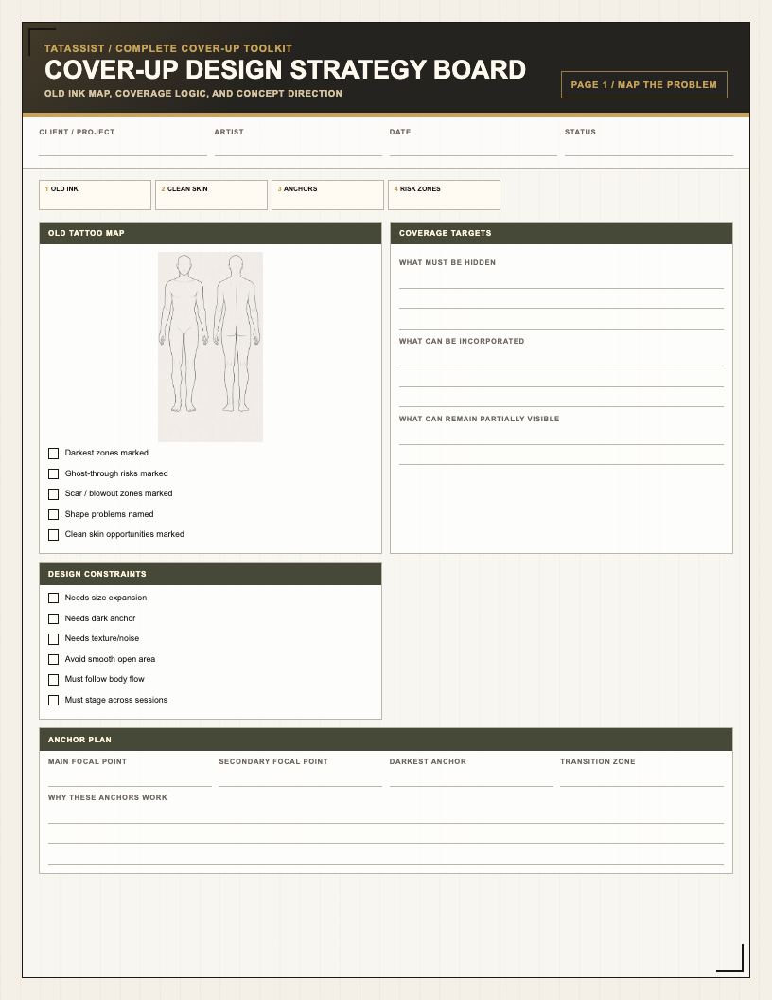

Unpaid design spirals
Stop burning hours trying to solve a project that was never qualified properly.
By artists, for artists
Cover-ups should not be discounted because they are difficult. They should be priced higher because they require more judgment, planning, risk control, and client management.
Created by Linda G from real shop work: difficult consults, old black saturation, scarred skin, laser-first calls, reworks, and projects that needed a clean no before they ever became a bad yes.

Built from Linda G's process
Linda started tattooing in 2007 and has owned Black Diamond Custom Tattoos in Las Vegas, Nevada since 2017. Her reputation with clients was built on transformations that help people stop seeing the old tattoo, feel confident in the new artwork, and love that part of their body again.
When your process is clear, clients feel heard before the design starts, understand why the plan has to be bigger, darker, staged, or laser-assisted, and trust you as the specialist guiding the transformation.
For the launch, Linda has included the templates that break down the full process alongside the eBook.
Creator and evidence
The credibility of this toolkit comes from the operating process behind it: Linda G's years in tattooing, shop ownership, real cover-up consultations, laser-first decisions, and the repeatable systems included in the launch bundle.
Do not make the first mistake before the design starts
What this prevents
Stop burning hours trying to solve a project that was never qualified properly.
Price planning, complexity, risk, and session load instead of apologizing for the real number.
Give clients clear language around bigger, darker, staged, reworked, or laser-first paths.
Know when the better professional move is modify, refer, laser first, or decline.
The shift
This toolkit gives you a repeatable way to slow the project down, assess what is real, explain the tradeoffs, quote the work properly, and protect the final result.
It is built for artists who already tattoo and want a practical cover-up workflow they can use in real consultations, not another vague lesson about "going darker and bigger."
Use it today
Use the consultation checklist before you draw, quote, or promise anything.
Decide whether the project is direct cover-up, rework, laser first, referral, or decline.
Use the client-facing project plan to sell the bigger, darker, staged, or laser-lightened path.
Use the pricing worksheet before your next estimate, especially when the old tattoo controls the job.
Launch bundle
For this launch, Linda has included the consultation, qualification, pricing, laser, client-plan, and design-strategy templates so artists can put the process to work faster.

Real shop scenario
A client wants a small soft rose over a dense black name. Without a process, the artist tries to be nice: quotes too low, keeps the design too small, skips the laser conversation, and fights the old tattoo for multiple sessions.
With the toolkit, the consult catches saturation, size, skin, expectation, and flexibility problems early. The client gets a documented plan: expand the concept, use darker value where needed, consider laser first if they want more softness, and price the planning and risk like real specialist work.
$999 value stack
The core education system for assessing old tattoos, planning cover-ups, making laser decisions, and pricing the work like a specialist.

Run a real consultation before you draw, quote, or promise anything. Capture motivation, skin limits, old tattoo reality, expectations, and go/no-go signals.

Decide whether the project should proceed, be modified, require laser first, be referred out, or be declined before you accept the risk.

Give the client a professional plan that documents the recommendation, expectations, deliverables, quote range, responsibilities, and next steps.

Build quotes around planning labor, complexity, session load, risk, deposit terms, scope changes, and the premium nature of cover-up work.

Know when laser protects the outcome, when it is optional, how to explain the delay, and what threshold to reassess before tattooing.

Map old ink, problem zones, anchors, focal points, value strategy, texture, flow, and concept options before final rendering.
Use it in order
Understand the client, old tattoo, skin, expectations, and real constraints.
Decide if the project should proceed, change, need laser, or stop.
Turn the recommendation into a clear project plan the client can understand.
Quote around planning, complexity, session load, and risk.
Map coverage logic before burning hours on final art.
Who should buy this
The math
If this helps you confidently book one $1,500+ cover-up, avoid one bad-fit project, or stop underpricing premium-difficulty work, the $297 price is not the real decision. If it stops you from underquoting one cover-up by $300, saves one nightmare week, or helps you explain one laser recommendation clearly, it has already done its job.
Complete toolkit
This is the full cover-up process in one digital bundle: education, consultation, qualification, client planning, pricing, laser decisions, and design strategy. Delivered digitally through Gumroad.
Complete Cover-Up Toolkit
Secure checkout on Gumroad. Digital product. Instant access after purchase.
FAQ
No. It is built for working tattoo artists who already understand tattooing fundamentals.
No. The principles apply broadly, though Linda's experience is especially strong in color realism and cover-up work.
No. A serious cover-up process includes knowing when to modify, recommend laser, refer out, or decline.
No. It is a digital product delivered through Gumroad.
You get the strategy eBook and the workflow systems for consultation, qualification, client planning, pricing, laser recommendations, and design strategy.
No. The point is not to teach working artists that cover-ups are hard. The point is to give you a repeatable shop process for qualifying the job, controlling expectations, documenting the plan, pricing the risk, and knowing when to say no.